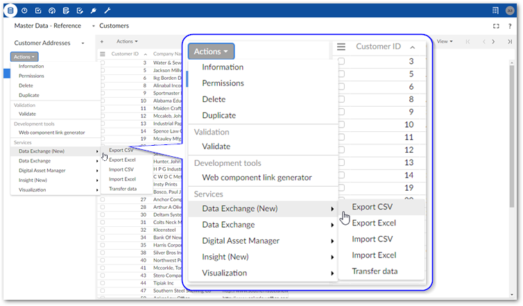
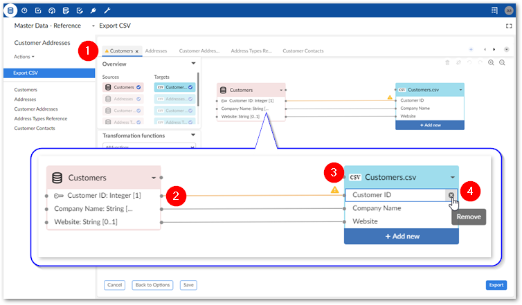
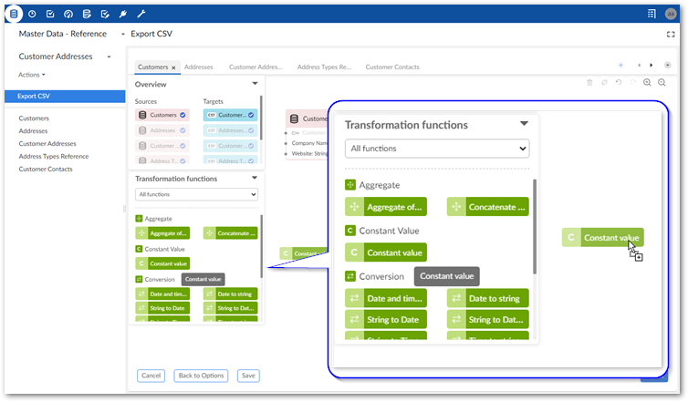
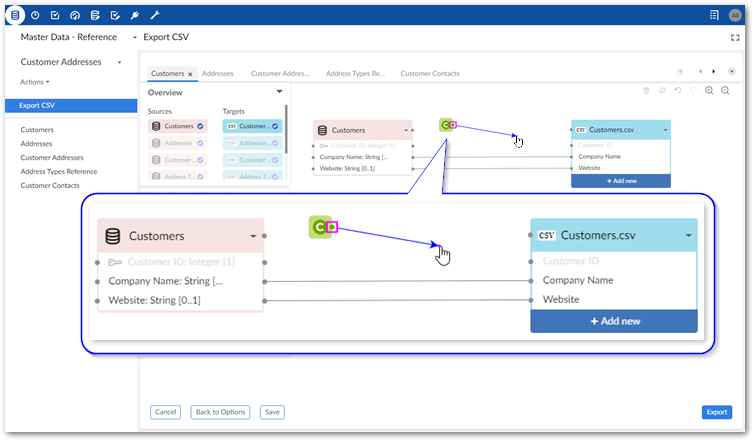
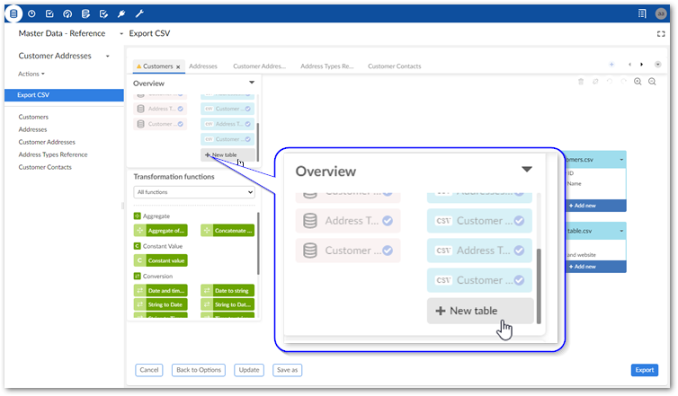
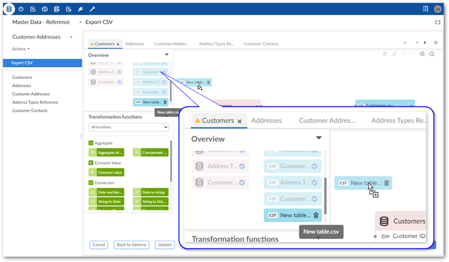
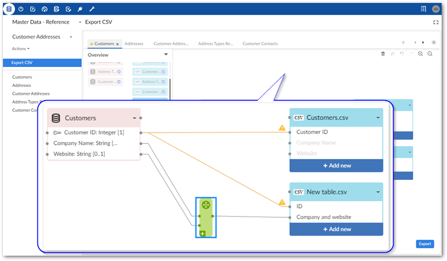

Exporting multiple tables
To export data to an Excel file or an archive (as CSV files):
Initiate the export process:
Navigate to the dataset containing the source tables.
Initiate the export process by selecting: Actions > Data Exchange (New) > Export CSV or Export Excel.

Supply a file name and check default options. If you have questions about individual settings, hover your mouse over the label and select the '?' icon to see a description:

Specify the tables you want to export with the Choose the tables to export property.
If you do not select all source tables and later decide to include one or more of the remaining tables, you can accomplish this using the options in the Mapping screen. See the next step for more details.
Optionally, update or create mappings:
Note
The following steps provide only high-level mapping instructions. See Mapping interface reference for more detailed information on mapping and transformations.
Select Mapping to enter the mapping screen where you can update the default data mappings or add data transformations. The add-on automatically creates mappings where the source and target have the same labels. A mapping identifies which data is extracted from the source and where it is extracted to in the target.
The following image and list describe some features of table and field mapping:

1) Table mapping tabs
Each tab contains the mappings between a different pair of source and target tables. The icons to the right allow you to locate and navigate between tabs. Additionally, you can create new tabs, and add any unmapped source and target tables by dragging them from the Overview box to the mapping pane. Note that the '+' icon is disabled when all sources are already included in a mapping tab.
2) Mappings
Each line is a mapping. Drag from one field's connection point to another to create a mapping. An orange color and icon indicates there is a warning for a mapping. Select the icon to view the warning. In these cases, where possible, the add-on will perform a default transformation.
3) Source (pink) and target (blue) tables
By default, the data source displays on the left and includes data type an cardinality for fields. The target table on the right shows the field names that are included in the exported file. Each table header has a label and uses an icon to show its type and selecting the small arrow collapses and expands the table. The headers also have connection points. Drag this top point to automatically generate mappings between tables.
You can add, and map to additional target tables. See Adding tables to the export for more information.
Please note that:
You can use the same source or target only once in the mapping screen. In other words, you cannot use a source or target in more than one table mapping tab.
Sources can have multiple targets, but targets can only have one source.
4) Adding, editing, and removing fields
You can add additional fields in the target file by selecting Add new. For instance you might want to use a transformation function to split a Full Name field into First Name and Last Name in the target. Double-click to edit field names. Hover your mouse over the field and select the 'x' icon to remove them.
Optionally, add transformation functions:
Transformation functions allow you change the source data to meet technical or business requirements in the target. The add-on ships with several transformation functions that support common business cases. For more details on how to use transformation functions, see Mapping interface reference. For information on the available transformations and their descriptions, see Transformation function reference.
To add a transformation, select and drag the desired transformation function to the mapping screen.

Select and drag fields from the source to the function's input (left) and connect the function's output (right) to target fields. In the example shown below a constant value is output to the target, so only the function's output is mapped.

Double-click the transformation function to edit its parameters. Each function is different, for a complete list, see Transformation function reference.
Optionally, select Save to store your settings as a template for re-use. For more information on using templates, see Using templates.
Click Export to complete the process.
Adding tables to the export
You can include additional target tables in an export from the Mapping screen. One source table can map to multiple targets. This allows you to split source data into multiple tables.
The following steps assume you have already initiated the export process and outline how to add target tables to an export:
Add a new target table:
From the Overview box in the Mapping screen, select New table.

Drag the new table to the mapping screen.

Add fields to the new table by selecting Add new.
After adding a field, you can double-click to edit its name, or select the 'x' icon to remove it.
Drag from fields in the source table to fields in the new target to create mappings.
As shown below, you can also include a transformation function to manipulate data if required.

Repeat the previous steps until you have all required target tables.